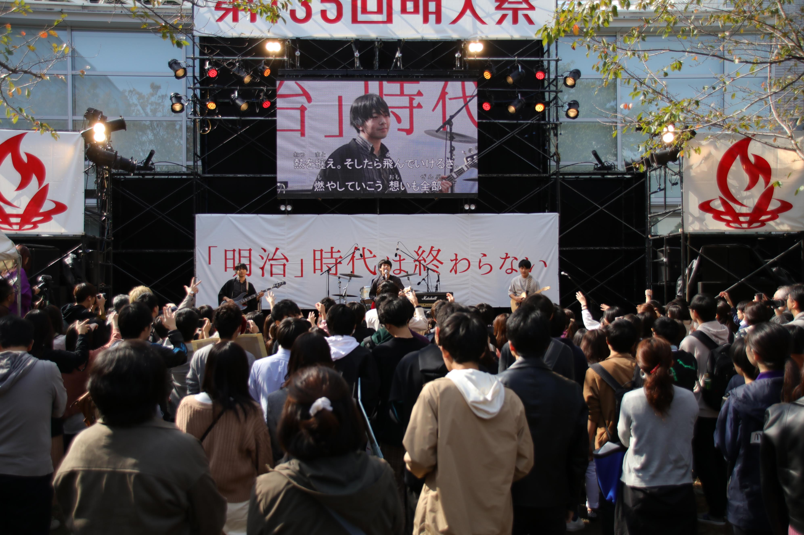
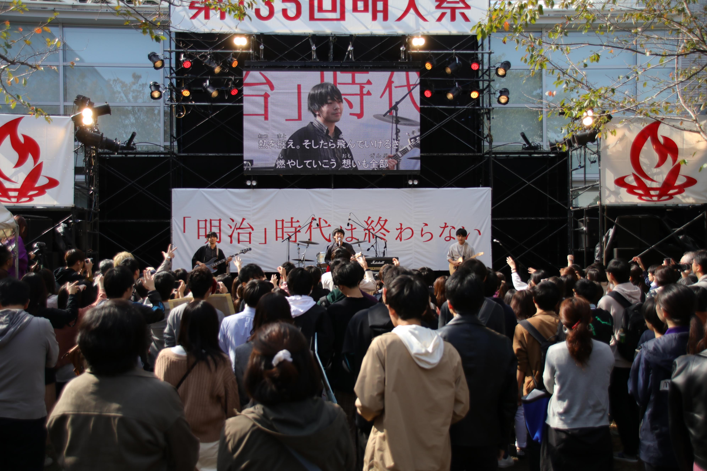

第137回明大祭公式
テーマソング募集
テーマソング募集
今年度も明大祭公式テーマソングを募集します！
テーマソングであなたの「個」を表現してみませんか？
たくさんのご応募、お待ちしています！
応募条件
テーマソングであなたの「個」を表現してみませんか？
たくさんのご応募、お待ちしています！
代表者が明治大学の学生であること。
第137回明大祭公式テーマソング決定までの流れ
|
STEP.01
|
|
|
|
【7月12日(月)～7月31日(土)】
|
|
STEP.02
|
|
|
STEP.03
|
|
|
|
【8月31日(火)締め切り】
|
|
STEP.04
|
|
| 【9月11日(土)】 |
STEP.01
フォームにて応募受付【7月12日(月)～7月31日(土)】
下記のGoogleフォームに以下の3点を記載し、送信してください。
1.団体名もしくは個人名
2.代表者名（学部・学年）
3.連絡先（電話番号・メールアドレス）
2.代表者名（学部・学年）
3.連絡先（電話番号・メールアドレス）
※個人情報は第137回明大祭実行委員会が厳正に取り扱います。
※エントリーの段階では、楽曲提出の必要はありません。
STEP.02
楽曲に関する詳細と、今後の流れについてのメール送信
明大祭実行委員会より、楽曲制作や楽曲提出に際しての注意禁止事項などを記載した資料をお送りします。
※@meidaisai.jpのドメインからのメールを受信できるように設定してください。
※明大祭実行委員会から1週間たっても連絡がなかった場合、koho-137@meidaisai.jpにご連絡ください。
STEP.03
メールにて楽曲提出【8月31日(火)締め切り】
メールにて楽曲を提出していただきます。代表者の方がメールを8月31日(火)23：59までに送信してください。
メールにて提出していただく内容は以下の5つです。
メールにて提出していただく内容は以下の5つです。
1.楽曲（音源の提出形式はWAV形式を推奨）
2.歌詞（変更不可）
3.メンバー全員がはっきりと映った写真
4.代表者の学生証の写真
5.所属メンバーのプロフィール（学校・学年・名前・パート）
2.歌詞（変更不可）
3.メンバー全員がはっきりと映った写真
4.代表者の学生証の写真
5.所属メンバーのプロフィール（学校・学年・名前・パート）
※別途Googleフォームにて著作権譲渡に関する同意を行っていただきます。忘れずにご回答ください。
※明大祭実行委員会内の楽曲の選定基準として、以下の2つを設けています。
①楽曲が第137回明大祭テーマに沿っていること。
（第137回明大祭テーマはコチラ）
（第137回明大祭テーマはコチラ）
②盛り上がることができること。
STEP.04
明大祭実行委員会内投票・一般投票により第137回明大祭公式テーマソング決定【9月11日(土)】
・歌詞の変更や楽曲のアレンジはできません。また、音質によって再録をお願いする可能性がございます。
・代表者の名義の貸し借りは禁止です。このような事態が発覚した場合は厳正な対処を行います。
・盗作およびそれに準じる行為は禁止です。楽曲制作の際、ご注意お願いいたします。
・公序良俗に反する内容や、特定の宗教、政治活動に関する内容は禁止です。
・明大祭実行委員会がリリースする前に、楽曲をSNSなどの媒体に掲載することは禁止です。
・明治大学が発表している、新型コロナウイルス感染拡大防止のための明治大学活動制限指針を確認し、課外活動の制限に従って活動を行ってください。明治大学の公式ホームページよりご確認ください。
・今後の新型コロナウイルスの感染状況により、第137回明大祭は対面開催ではなくなる可能性がございます。
Opening
 
明大祭の広報のための
プロモーションビデオ
プロモーションビデオ